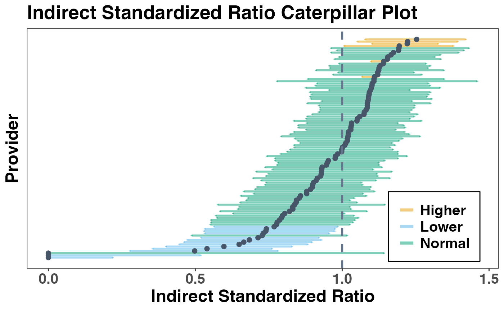

Get a caterpillar plot to display confidence intervals for standardized measures
Source:R/caterpillar_plot.R
caterpillar_plot.RdGenerate a caterpillar plot for standardized measures from different models using a provided CI dataframe.
Usage
caterpillar_plot(
CI,
point_size = 2,
point_color = "#475569",
refline_value = NULL,
refline_color = "#64748b",
refline_size = 1,
refline_type = "dashed",
errorbar_width = 0,
errorbar_size = 0.5,
errorbar_alpha = 0.5,
errorbar_color = "#94a3b8",
use_flag = FALSE,
flag_color = c("#E69F00", "#56B4E9", "#009E73")
)Arguments
- CI
a dataframe from
confintfunction containing the standardized measure values, along with their confidence intervals lower and upper bounds.- point_size
size of the points in the caterpillar plot. The default value is 2.
- point_color
color of the points in the plot. The default value is "#475569".
- refline_value
value of the horizontal reference line, for which the standardized measures are compared. The default value is NULL.
- refline_color
color of the reference line. The default value is "#64748b".
- refline_size
size of the reference line. The default value is 1.
- refline_type
line type for the reference line. The default value is "dashed".
- errorbar_width
the width of the error bars (horizontal ends of the CI bars). The default value is 0.
- errorbar_size
the thickness of the error bars. The default value is 0.5.
- errorbar_alpha
transparency level for the error bars. A value between 0 and 1, where 0 is completely transparent and 1 is fully opaque. The default value is 0.5.
- errorbar_color
color of the error bars. The default value is "#94a3b8".
- use_flag
logical; if
TRUE, the error bars are colored to show providers' flags based on their performance. The default isFALSE.- flag_color
vector of colors used for flagging providers when
use_flag = TRUE. The default value isc("#E69F00", "#56B4E9", "#009E73").
Details
This function creates a caterpillar plot to visualize the standardized measures (indirect or direct).
The input CI must be a dataframe output from package pprof's confint function.
Each provider's standardized measure value is represented as a point, and a reference line is shown at the value specified by refline_value (default is NULL).
If refline_value is not specified, for linear FE or RE models with indirect or direct standardized differences, it will be set to 0;
for logistic FE models with indirect or direct ratios, it will be set to 1;
and for logistic FE with indirect or direct rates, it will be set to the population rate, which represents the average rate across all observations.
Confidence intervals (CI) are displayed as error bars: for alternative = "two.sided", two-sided confidence intervals are shown;
for alternative = "greater", error bars extend from the lower bound to the standardized measure values;
and for alternative = "less", they extend from the standardized measure values to the upper bound.
For cases where one side of the confidence interval is infinite, that side only extends to the standardized measure.
For example, in a logistic fixed effect model, if a provider has all 0s or all 1s, one side of the confidence interval will be infinite.
When use_flag = TRUE, the plot will use colors specified by flag_color to show the flags of providers.
Each error bar will be colored to reflect the flag, making it easy to identify providers with different performance levels.
When use_flag = FALSE, all error bars will have the same color, specified by errorbar_color.
This provides a simpler visualization without flagging individual providers.
Examples
data(ExampleDataLinear)
outcome <- ExampleDataLinear$Y
covar <- ExampleDataLinear$Z
ID <- ExampleDataLinear$ID
fit_linear <- linear_fe(Y = outcome, Z = covar, ID = ID)
#> Input format: Y, Z, and ID.
CI_linear <- confint(fit_linear)
caterpillar_plot(CI_linear$CI.indirect, use_flag = TRUE,
errorbar_width = 0.5, errorbar_size = 1)
data(ExampleDataBinary)
fit_logis <- logis_fe(Y = ExampleDataBinary$Y,
Z = ExampleDataBinary$Z,
ID = ExampleDataBinary$ID, message = FALSE)
CI_logis <- confint(fit_logis)
caterpillar_plot(CI_logis$CI.indirect_ratio, use_flag = TRUE,
errorbar_width = 0.5, errorbar_size = 1)
